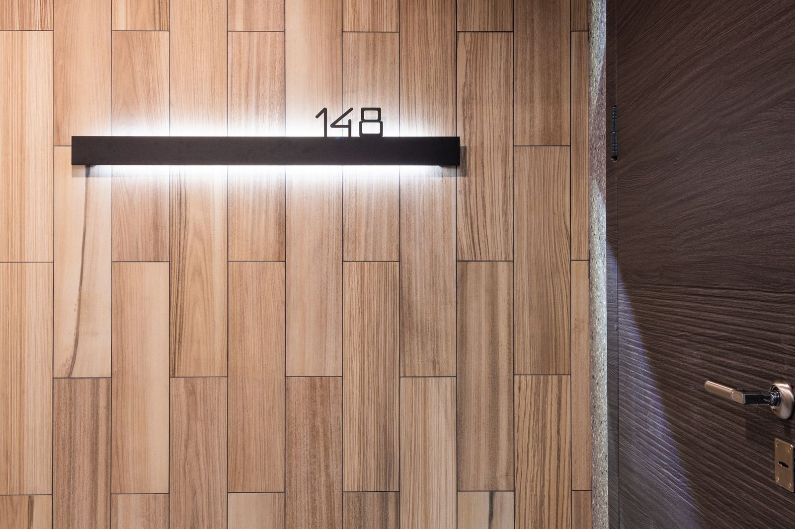
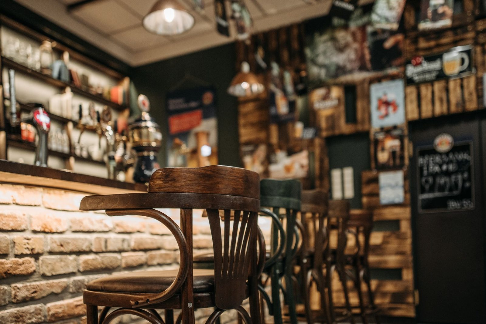

Heritage front door restoration
Cooks HillAn 1890s terrace entry brought back from rot and a century of paint — new spliced stiles, rebuilt fanlight and period-correct hardware. The original door stayed, exactly as the heritage schedule required.
Recent work
Six jobs that show what the Hamilton workshop turns out — from heritage restorations to full commercial fit-outs. Artwork stands in for photography on this demo; your real projects go here.
An 1890s terrace entry brought back from rot and a century of paint — new spliced stiles, rebuilt fanlight and period-correct hardware. The original door stayed, exactly as the heritage schedule required.

A blackbutt open-riser flight with a hand-shaped volute, built for a beach-house renovation with sea light pouring down the void. Every tread was templated on site and finished in the workshop.

Counter, back-bar shelving and banquette seating for a forty-seat cafe, installed over two weekends so trade never stopped. The v-groove front hides every fixing and shrugs off the daily knocks.

Four seized double-hungs on a weatherboard cottage, rebuilt with new sashes, cords and parting beads. They now lift with two fingers and lock down tight against the southerly.

Full-height raised panelling for a waterfront office, machined in our workshop and installed in three days flat. Concealed access panels keep the AV gear serviceable without touching a profile.

A nine-metre spotted-gum bar with a waterfall end, built ten minutes from the venue in our own workshop. The brass foot rail and drink shelf were templated around the publican's pour line.